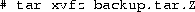

This chapter covers the most important things that you need to know about system administration under Linux in sufficient detail to start using the system comfortably. In order to keep the chapter manageable, it covers just the basics and omits many important details. The Linux System Administrator's Guide, by Lars Wirzenius (see Appendix A) provides considerably more detail on system administration topics. It will help you understand better how things work and hang together. At least, skim through the SAG so that you know what it contains and what kind of help you can expect from it.
Linux differentiates between different users. What they can do to each other and the system is regulated. File permissions are arranged so that normal users can't delete or modify files in directories like /bin and /usr/bin. Most users protect their own files with the appropriate permissions so that other users can't access or modify them. (One wouldn't want anybody to be able to read one's love letters.) Each user is given an account that includes a user name and home directory. In addition, there are special, system defined accounts which have special privileges. The most important of these is the root account, which is used by the system administrator. By convention, the system administrator is the user, root.
There are no restrictions on root. He or she can read, modify, or delete any file on the system, change permissions and ownerships on any file, and run special programs like those which partition a hard drive or create file systems. The basic idea is that a person who cares for the system logs in as root to perform tasks that cannot be executed as a normal user. Because root can do anything, it is easy to make mistakes that have catastrophic consequences.
If a normal user tries inadvertently to delete all of the files in /etc, the system will not permit him or her to do so. However, if root tries to do the same thing, the system doesn't complain at all. It is very easy to trash a Linux system when using root. The best way to prevent accidents is:
Picture the root account as a special, magic hat that gives you lots of power, with which you can, by waving your hands, destroy entire cities. It is a good idea to be a bit careful about what you do with your hands. Because it is easy to wave your hands in a destructive manner, it is not a good idea to wear the magic hat when it is not needed, despite the wonderful feeling.
We'll talk in greater detail about the system administrator's
responsibilities starting on page  .
.
Some people boot Linux with a floppy diskette that contains a copy of the Linux kernel. This kernel has the Linux root partition coded into it, so it knows where to look for the root file system. This is the type of floppy created by Slackware during installation, for example.
To create your own boot floppy, locate the kernel image on your hard disk. It should be in the file /vmlinuz, or /vmlinux. In some installations, /vmlinuz is a soft link to the actual kernel, so you may need to track down the kernel by following the links.
Once you know where the kernel is, set the root device of the kernel image to the name of your Linux root partition with the rdev command. The format of the command is
where kernel-name is the name of the kernel image, and
root-device is the name of the Linux root partition. For
example, to set the root device in the kernel /vmlinuz to
/dev/hda2, use the command
rdev can set other options in the kernel, like the default SVGA
mode to use at boot time. The command
prints a help message on the screen. After setting the root
device, simply copy the kernel image to the floppy. Before copying
data to any floppy, however, it's a good idea to use the MS-DOS
FORMAT.COM or the Linux fdformat program to format the
diskette. This lays down the sector and track information that is
appropriate to the floppy's capacity.
Floppy diskette formats and their device driver files are discussed
further starting on page .
Device driver files, as mentioned earlier, reside in the /dev
directory. To copy the kernel in the file /etc/Image to the
floppy in /dev/fd0, use the command
This floppy should now boot Linux.
LILO is a separate boot loader which resides on your hard disk. It is executed when the system boots from the hard drive and can automatically boot Linux from a kernel image stored there.
LILO can also be used as a first-stage boot loader for several operating systems, which allows you to select the operating system you to boot, like Linux or MS-DOS. With LILO, the default operating system is booted unless you press Shift during the boot-up sequence, or if the prompt directive is given in the lilo.conf file. In either case, you will be provided with a boot prompt, where you type the name of the operating system to boot (such as ``linux'' or ``msdos''). If you press Tab at the boot prompt, a list of operating systems that the system knows about will be provided.
The easy way to install LILO is to edit the configuration file,
/etc/lilo.conf. The command
rewrites the modified lilo.conf configuration to the boot sector
of the hard disk, and must be run every time you modify
lilo.conf.
The LILO configuration file contains a ``stanza'' for each operating system that you want to boot. The best way to demonstrate this is with an example. The lilo.conf file below is for a system which has a Linux root partition on /dev/hda1 and a MS-DOS partition on /dev/hda2.
The first operating system stanza is the default operating system for LILO to boot. Also note that if you use the ``root ='' line, above, there's no reason to use rdev to set the root partition in the kernel image. LILO sets it at boot time.
The Microsoft Windows '95 installer will overwrite the LILO boot manager. If you are going to install Windows '95 on your system after installing LILO, make sure to create a boot disk first (see Section 4.2). With the boot disk, you can boot Linux and re-install LILO after the Windows '95 installation is completed. This is done simply by typing, as root, the command /sbin/lilo, as in the step above. Partitions with Windows '95 can be configured to boot with LILO using the same lilo.conf entries that are used to boot the MS-DOS partition.
The Linux FAQ (see Appendix A) provides more information on LILO, including how to use LILO to boot with the OS/2 Boot Manager.
Shutting down a Linux system can be tricky. You should never simply turn off the power or press the reset switch. The kernel keeps track of the disk read/write data in memory buffers. If you reboot the system without giving the kernel a chance to write its buffers to disk, you can corrupt the file systems.
Other precautions are taken during shutdown as well. All processes are sent a signal that allows them to die gracefully (by first writing and closing all files, for example). File systems are unmounted for safety. If you wish, the system can also alert users that the system is going down and give them a chance to log off.
The easiest way to shut down is with the shutdown command. The
format of the command is
The time argument is the time to shut down the system (in
the format hh:mm:ss), and warning-message is a message
displayed on all user's terminals before shutdown. Alternately, you
can specify the time as ``now'', to shut down
immediately. The -r option may be given to shutdown to
reboot the system after shutting down.
For example, to shut down and reboot the system at 8:00 pm, use the
command
The command halt may be used to force an immediate shutdown without any warning messages or grace period. halt is useful if you're the only one using the system and want to shut down and turn off the machine.
Don't turn off the power or reboot the system until you
see the message:
It is very important that you shut down the system, ``cleanly,'' using
the shutdown or halt command. On some systems, pressing
Ctrl-Alt-Del will be trapped and cause a shutdown. On other
systems, using the ``Vulcan nerve pinch'' will reboot the system
immediately and cause disaster.
Immediately after Linux boots and the kernel mounts the root file system, the first program that the system executes is init. This program is responsible for starting the system startup scripts, and modifies the system operatiing from its initial boot-up state to its standard, multiuser state. init also spawns the login: shells for all of the tty devices on the system, and specifies other startup and shutdown procedures.
After startup, init remains quietly in the background, monitoring and if necessary altering the running state of the system. There are many details that the init program must see to. These tasks are defined in the /etc/inittab file. A sample /etc/inittab file is shown below.
Modifying the /etc/inittab file incorrectly can prevent you from logging in to your system. At the very least, when changing the /etc/inittab file, keep on hand a copy of the original, correct file, and a boot/root emergency floppy in case you make a mistake.
At startup, this /etc/inittab starts six virtual consoles, a login: prompt on the modem attached to /dev/ttyS0, and a login: prompt on a character terminal connected via a RS-232 serial line to /dev/ttyS1.
Briefly, init steps through a series of run levels, which correspond to various operationing states of the system. Run level 1 is entered immediately after the system boots, run levels 2 and 3 are the normal, multiuser operation modes of the system, run level 4 starts the X Window System via the X display manager xdm, and run level 6 reboots the system. The run level(s) associated with each command are the second item in each line of the /etc/inittab file.
For example, the line
will maintain a login prompt on a serial terminal for runlevels
1-5. The ``s2'' before the first colon is a symbolic
identifier used internally by init. respawn is an
init keyword that is often used in conjunction with serial terminals.
If, after a certain period of time, the agetty program, which
spawns the terminal's login: prompt, does not receive input at
the terminal, the program times out and terminates execution. ``
respawn'' tells init to re-execute agetty, ensuring that
there is always a login: prompt at the terminal, regardless of
whether someone has logged in. The remaining parameters are passed
directly to agetty and instruct it to spawn the login
shell, the data rate of the serial line, the serial device, and the
terminal type, as defined in /etc/termcap or
/etc/terminfo.
The /sbin/agetty program handles many details related to terminal I/O on the system. There are several different versions that are commonly in use on Linux systems. They include mgetty, psgetty, or simply, getty.
In the case of the /etc/inittab line
which allows users to log in via a modem connected to serial line
/dev/ttyS0, the /sbin/agetty parameters ``-mt60'' allow
the system to step through all of the modem speeds that a caller
dialing into the system might use, and to shut down /sbin/agetty
if there is no connection after 60 seconds. This is called
negotiating a connection. The supported modem speeds are enumerated
on the command line also, as well as the serial line to use, and the
terminal type. Of course, both of the modems must support the data
rate which is finally negotiated by both machines.
Many important details have been glossed over in this section. The tasks that /etc/inittab maintains would comprise a book of their own. For further information, the manual pages of the init and agetty programs, and the Linux Documentation Project's Serial HOWTO, available from the sources listed in Appendix A, are starting points.
Another task of the system administrator is caring for file systems. Most of this job entails periodically checking the file systems for damage or corrupted files. Many Linux systems also automatically check the file systems at boot time.
Before a file system is accessible to the system, it must be
mounted on a directory. For example, if you have a file system on a
floppy, you must mount it under a directory like /mnt in order
to access the files on the floppy (see
page ). After mounting the file system, all of the
files in the file system appear in that directory. After unmounting
the file system, the directory (in this case, /mnt) will be
empty.
The same is true of file systems on the hard drive. The system automatically mounts file systems on your hard drive at bootup time. The so-called ``root file system'' is mounted on the directory /. If you have a separate file system for /usr, it is mounted on /usr. If you only have a root file system, all files (including those in /usr) exist on that file system.
mount and umount (not unmount) are used to mount and unmount file systems. The command
is executed automatically by the file /etc/rc at boot time, or
by the file /etc/rc.d/boot (see page ) on some
Linux systems. The file /etc/fstab provides information on file
systems and mount points. An example /etc/fstab file is
The first field, device, is the name of the partition to
mount. The second field is the mount point. The third field is the
file system type, like ext2 (for ext2fs) or minix (for
Minix file systems).
Table 4.1
lists the various file
system types that are mountable under Linux. Not all of these file system
types may be available on your system, because the kernel must have
support for them compiled in. See page
for information on building the kernel.
Not all of these file system
types may be available on your system, because the kernel must have
support for them compiled in. See page
for information on building the kernel.
Table 4.1: Linux File system Types
The last field of the fstab file are the mount options. This is normally set to defaults.
Swap partitions are included in the /etc/fstab file. They have a mount directory of none, and type swap. The swapon -a command, which is executed from /etc/rc or /etc/init.d/boot, is used to enable swapping on all of the swap devices that are listed in /etc/fstab.
The /etc/fstab file contains one special entry for the
/proc file system. As described on page , the
/proc file system is used to store information about system
processes, available memory, and so on. If /proc is not mounted,
commands like ps will not work.
The mount command may be used only by root. This ensures security on the system. You wouldn't want regular users mounting and unmounting file systems on a whim. Several software packages are available which allow non-root users to mount and unmount file systems, especially floppies, without compromising system security.
The mount -av command actually mounts all of the file systems other than the root file system (in the table above, /dev/hda2). The root file system is automatically mounted at boot time by the kernel.
Instead of using mount -av, you can mount a file system by
hand. The command
is equivalent to mounting the file system with the entry for
/dev/hda3 in the example /etc/fstab file, above.
In addition to the partition names listed in the /etc/fstab file, Linux recognizes a number of fixed and removable media devices. They are classified by type, interface, and the order they are installed. For example, the first hard drive on your system, if it is an IDE or older MFM hard drive, is controlled by the device driver pointed to by /dev/hda. The first partition on the hard drive is /dev/hda1, the second partition is /dev/hda2, the third partition is /dev/hda3, and so on. The first partition of the second IDE drive is often /dev/hdb1, the second partition /dev/hdb2, and so on. The naming scheme for the most commonly installed IDE drives for Intel-architecture, ISA and PCI bus machines, is given in Table 4.2.
Table 4.2: IDE device driver names.
CD-ROM and tape drives which use the extended IDE/ATAPI drive interface also use these device names.
Many machines, however, including high-end personal computer workstations, and machines based on Digital Equipment Corporation's Alpha processor, use the Small Computer System Interface (SCSI). The naming conventions for SCSI devices are somewhat different than that given above, due the greater flexibility of SCSI addressing. The first SCSI hard drive on a system is /dev/sda, the second SCSI drive is /dev/sdb, and so on. A list of common SCSI devices is given in Table 4.3.
Table 4.3: SCSI device drivers
Note that SCSI CD-ROM and tape drives are named differently than SCSI
hard drives. Removable SCSI media, like the Iomega Zip drive, follow
naming conventions for non-removable SCSI drives. The use of a Zip
drive for making backups is described starting on
page
Streaming tape drives, like those which read and write QIC-02, QIC-40,
and QIC-80 format magnetic tapes, have their own set of device names,
which are described on page .
Floppy disk drives use still another naming scheme, which is described
on page .
It is usually a good idea to check your file systems for damaged or corrupted files every now and then. Some systems automatically check their file systems at boot time (with the appropriate commands in /etc/rc or /etc/init.d/boot).
The command used to check a file system depends on the type of the
file system. For ext2fs file systems (the most commonly used type),
this command is e2fsck. For example, the command
checks the ext2fs file system on /dev/hda2 and automatically
corrects any errors.
It is usually a good idea to unmount a file system before checking it,
and necessary, if e2fsck is to perform any repairs on the file
system. The command
unmounts the file system on /dev/hda2. The one exception is that
you cannot unmount the root file system. In order to check the root
file system when it's unmounted, you should use a maintenance
boot/root diskette (see page ). You also
cannot unmount a file system if any of the files which it contains are
``busy''--that is, in use by a running process. For example, you
cannot unmount a file system if any user's current working directory
is on that file system. You will instead receive a ``Device
busy'' error message.
Other file system types use different forms of the e2fsck command, like efsck and xfsck. On some systems, you can simply use the command fsck, which automatically determines the file system type and executes the appropriate command.
If e2fsck reports that it performed repairs on a mounted file system, you must reboot the system immediately. You should give the command shutdown -r to perform the reboot. This allows the system to re-synchronize the information about the file system after e2fsck modifies it.
The /proc file system never needs to be checked in this manner. /proc is a memory file system and is managed directly by the kernel.
Instead of reserving a separate partition for swap space, you can use a swap file. However, you need to install Linux and get everything running before you create the swap file.
With Linux installed, you can use the following commands
to create a swap file. The command below creates a swap file of
size 8208 blocks (about 8 Mb).
This command creates the swap file, /swap. The ``count=''
parameter is the size of the swap file in blocks.
This command initializes the swap file. Again, replace the name and
size of the swapfile with the appropriate values.
Now the system is swapping on the file /swap. The
sync command ensures that the file has been written to disk.
One major drawback to using a swap file is that all access to the swap file is done through the file system. This means the blocks which make up the swap file may not be contiguous. Performance may not be as good as a swap partition, where the blocks are always contiguous and I/O requests are made directly to the device.
Another drawback of large swap files is the greater chance that the file system will be corrupted if something goes wrong. Keeping the regular file systems and swap partitions separate prevents this from happening.
Swap files can be useful if you need to use more swap space temporarily. If you're compiling a large program and would like to speed things up somewhat, you can create a temporary swap file and use it in addition to the regular swap space.
To remove a swap file, first use swapoff, as in
Then the file can be deleted.
Each swap file or partition may be as large as 16 megabytes, but you may use up to 8 swap files or partitions on your system.
Even if you're the only user on your system, it's important to understand the aspects of user management under Linux. You should at least have an account for yourself (other than root) to do most of your work.
Each user should have his or her own account. It is seldom a good idea to have several people share the same account. Security an issue, and accounts uniquely identify users to the system. You must be able to keep track of who is doing what.
The system keeps track of the following information about each user:
This information is stored in the file /etc/passwd. Each line
in the file has the format
An example might be
In this example, the first field, ``kiwi,'' is the user name.
The next field, ``Xv8Q981g71oKK'', is the encrypted password. Passwords are not stored on the system in human-readable format. The password is encrypted using itself as the secret key. In other words, one must know the password in order to decrypt it. This form of encryption is reasonably secure.
Some systems use ``shadow passwords,'' in which password information is stored in the file /etc/shadow. Because /etc/passwd is world-readable, /etc/shadow provides some degree of extra security because its access permissions are much more restricted. Shadow passwords also provide other features, like password expiration.
The third field, ``102'', is the UID. This must be unique for each user. The fourth field, ``100'', is the GID. This user belongs to the group numbered 100. Group information is stored in the file /etc/group. See Section 4.6.5 for more information.
The fifth field is the user's full name, ``Laura Poole''. The last two fields are the user's home directory (/home/kiwi), and login shell (/bin/bash), respectively. It is not required that the user's home directory be given the same name as the user name. It simply helps identify the directory.
When adding users, several steps must be taken. First, the user is given an entry in /etc/passwd, with a unique user name and UID. The GID, full name, and other information must be specified. The user's home directory must be created, and the permissions on the directory set so that the user owns the directory. Shell initialization files must be installed in the home directory, and other files must be configured system-wide (for example, a spool for the user's incoming e-mail).
It is not difficult to add users by hand, but when you are running a system with many users, it is easy to forget something. The easiest way to add users is to use an interactive program which updates all of the system files automatically. The name of this program is useradd or adduser, depending on what software is installed.
The adduser command takes its information from the file /etc/adduser.conf, which defines a standard, default configuration for all new users.
A typical /etc/adduser.conf file is shown below.
In addition to defining preset variables that the adduser command uses, /etc/adduser.conf also specifies where default system configuration files for each user are located. In this example, they are located in the directory /etc/skel, as defined by the SKEL= line, above. Files which are placed in this directory, like a system-wide, default .profile, .tcshrc, or .bashrc file, will be automatically installed in a new user's home directory by the adduser command.
Deleting users can be accomplished with the commands userdel or deluser, depending on the software installed on the system.
If you'd like to temporarily ``disable'' a user from logging in to the
system without deleting his or her account, simply prepend an asterisk
(``*'') to the password field in /etc/passwd. For example,
changing kiwi's /etc/passwd entry to
prevents kiwi from logging in.
After you have created a user, you may need to change attributes for
that user, like the home directory or password. The easiest way to do
this is to change the values directly in /etc/passwd. To set a
user's password, use passwd. The command
will change larry's password. Only root may change other
users' passwords in this manner. Users can change their own passwords,
however.
On some systems, the commands chfn and chsh allow users to set their own full name and login shell attributes. If not, the system administrator must change these attributes for them.
As mentioned above, each user belongs to one or more groups. The only real importance of group relationships pertains to file permissions. As you'll recall from Section 3.10, each file has a ``group ownership'' and a set of group permissions which defines how users in that group may access the file.
There are several system-defined groups, like bin, mail, and sys. Users should not belong to any of these groups; they are used for system file permissions. Instead, users should belong to an individual group like users. You can also maintain several groups for users, like student, staff, and faculty.
The file /etc/group contains information about groups.
The format of each line is
Some example groups might be:
The first group, root, is a special system group reserved for
the root account. The next group, users, is for regular
users. It has a GID of 100. The users mdw and larry
are given access to this group. Remember that in /etc/passwd
each user was given a default GID. However, users may belong to
more than one group, by adding their user names to other group lines
in /etc/group. The groups command lists what groups you
are given access to.
The third group, guest, is for guest users, and other is for ``other'' users. The user kiwi is given access to this group as well.
The ``password'' field of /etc/group is sometimes used to set a password on group access. This is seldom necessary. To protect users from changing into privileged groups (with the newgroup command), set the password field to ``*''.
The commands addgroup or groupadd may be used to add groups to your system. Usually, it's easier just to add entries in /etc/group yourself, as no other configuration needs to be done to add a group. To delete a group, simply delete its entry in /etc/group.
Because the system administrator has so much power and responsibility, when some users have their first opportunity to login as root. either on a Linux system or elsewhere, the tendency is to abuse root's privileges. I have known so-called ``system administrators'' who read other users' mail, delete users' files without warning, and generally behave like children when given such a powerful ``toy''.
Because the administrator has such power on the system, it takes a certain amount of maturity and self-control to use the root account as it was intended--to run the system. There is an unspoken code of honor which exists between the system administrator and the users on the system. How would you feel if your system administrator was reading your e-mail or looking over your files? There is still no strong legal precedent for electronic privacy on time-sharing computer systems. On UNIX systems, the root user has the ability to forego all security and privacy mechanisms on the system. It is important that the system administrator develop a trusting relationship with his or her users. I can't stress that enough.
System administrators can take two stances when dealing with abusive users: they can be either paranoid or trusting. The paranoid system administrator usually causes more harm than he or she prevents. One of my favorite sayings is, ``Never attribute to malice anything which can be attributed to stupidity.'' Put another way, most users don't have the ability or knowledge to do real harm on the system. Ninety percent of the time, when a user is causing trouble on the system (for instance, by filling up the user partition with large files, or running multiple instances of a large program), the user is simply unaware that he or she is creation a problem. I have come down on users who were causing a great deal of trouble, but they were simply acting out of ignorance--not malice.
When you deal with users who cause potential trouble, don't be accusatory. The burden of proof is on you; that is, the rule of ``innocent until proven guilty'' still holds. It is best to simply talk to the user and question him or her about the trouble instead of being confrontational. The last thing you want is to be on the user's bad side. This will raise a lot of suspicion about you--the system administrator--running the system correctly. If a user believes that you distrust or dislike them, they might accuse you of deleting files or breaching privacy on the system. This is certainly not the kind of position you want to be in.
If you find that a user is attempting to ``crack,'' or otherwise intentionally do harm to the system, don't return the malicious behavior with malice of your own. Instead, provide a warning, but be flexible. In many cases, you may catch a user ``in the act'' of doing harm to the system. Give them a warning. Tell them not to let it happen again. However, if you do catch them causing harm again, be absolutely sure that it is intentional. I can't even begin to describe the number of cases where it appeared as though a user was causing trouble, when in fact it was either an accident or a fault of my own.
The best way to run a system is not with an iron fist. That may be how you run the military, but Linux is not designed for such discipline. It makes sense to lay down a few simple and flexible guidelines. The fewer rules you have, the less chance there is of breaking them. Even if your rules are perfectly reasonable and clear, users will still at times break them without intending to. This is especially true of new users learning the ropes of the system. It is not patently obvious that you shouldn't download a gigabyte of files and mail them to everyone on the system. Users need help to understand the rules and why they are there.
If you do specify usage guidelines for your system, make sure also that the rationale for a particular guideline is clear. If you don't, users will find all sorts of creative ways to get around the rule, and not know that they are breaking it.
We don't tell you how to run your system down to the last detail. That depends on how you're using the system. If you have many users, things are much different than if you have only a few users, or if you're the only user on the system. However, it's always a good idea--in any situation--to understand what being the system administrator really means.
Being the system administrator doesn't make a Linux wizard. There are many administrators who know very little about Linux. Likewise, many ``normal'' users know more about Linux than any system administrator. Also, being the system administrator does not allow one to use malice against users. Just because the system gives administrators the ability to mess with user files does not mean that he or she has a right to do so.
Being the system administrator is not a big deal. It doesn't matter if your system is a tiny 386 or a Cray supercomputer. Running the system is the same, regardless. Knowing the root password isn't going to earn you money or fame. It will allow you to maintain the system and keep it running. That's it.
Before we can talk about backups, we need to introduce the tools used to archive files on UNIX systems.
The tar command is most often used to archive files. Its command syntax is
where options is the list of commands and options for tar,
and files is the list of files to
add or extract from the archive.
For example, the command
packs all of the files in /etc into the tar archive
backup.tar. The first argument to tar, ``cvf'', is the
tar ``command.'' c tells tar to create a new archive
file. v forces tar to use verbose mode, printing each file
name as it is archived. The ``f'' option tells tar that
the next argument, backup.tar, is the name of the archive to
create. The rest of the arguments to tar are the file and
directory names to add to the archive.
The command
will extract the tar file backup.tar in the current directory.
Old files with the same name are overwritten when extracting files into an existing directory.
Before extracting tar files it is important to know where the files
should be unpacked. Let's say that you archive the following files:
/etc/hosts, /etc/group, and /etc/passwd. If you use
the command

the directory name /etc/ is added to the beginning of each file
name. In order to extract the files to the correct location, use
because files are extracted with the path name saved in the archive
file.
However, if you archive the files with the command
the directory name is not saved in the archive file. Therefore, you
need to ``cd /etc'' before extracting the files. As you can
see, how the tar file is created makes a large difference in where you
extract it. The command
can be used to display a listing of the archive's files without
extracting them. You can see what directory the files in the archive
are stored relative to, and extract the archive in the correct
location.
Unlike archiving programs for MS-DOS, tar does not automatically
compress files as it archives them. If you are archiving two, 1-megabyte
files, the resulting tar file is two megabytes in size. The gzip
command compresses a file (it need not be a tar file). The command
compresses backup.tar and leaves you with backup.tar.gz, a
compressed version of the file. The -9 switch tells gzip
to use the highest compression factor.
The gunzip command may be used to uncompress a gzipped file. Equivalently, you may use ``gzip -d''.
gzip is a relatively new tool in the UNIX community. For many years, the compress command was used instead. However, because of several factors, including a software patent dispute against the compress data compression algorithm, and the fact that gzip is much more efficient, compress is being phased out.
Files that are output by compress end in ``.Z.''
backup.tar.Z is the compressed version of backup.tar, while
backup.tar.gz is the gzipped version. The
uncompress command is used to expand a compressed file.
It is equivalent to ``compress -d.'' gunzip knows how to
handle compressed files as well.
To archive a group of files and compress the result, use the commands:
The result is backup.tar.gz. To unpack this file, use the
reverse commands:
Always make sure that you are in the correct directory before
unpacking a tar file.
You can use some Linux cleverness to do this on one command line.
Here, we send the tar file to ``-'', which stands for
tar's standard output. This is piped to gzip, which compresses
the incoming tar file. The result is saved in backup.tar.gz.
The -c option tells gzip to send its output to standard
output, which is redirected to backup.tar.gz.
A single command to unpack this archive would be:
Again, gunzip uncompresses the contents of backup.tar.gz
and sends the resulting tar file to standard output. This is piped to
tar, which reads ``-'', this time referring to tar's
standard input.
Happily, the tar command also includes the z option to automatically compress/uncompress files on the fly, using the gzip compression algorithm.
The command
is equivalent to
Just as the command

may be used instead of
Refer to the tar and gzip manual pages for more information.
Floppies are often used as backup media. If you don't have a tape drive connected to your system, floppy disks can be used (although they are slower and somewhat less reliable).
As mentioned earlier, floppy diskettes must be formatted with the MS-DOS FORMAT.COM or the Linux fdformat program. This lays down the sector and track information that is appropriate to the floppy's capacity.
A few of the device names and formats of floppy disks which are accessible by Linux are given in Table 4.4.
Table 4.4: Linux floppy disk formats.
Devices which begin with fd0 are the first floppy diskette drive, which is named the A: drive under MS-DOS. The driver file names of second floppy device begin with fd1. Generally, the Linux kernel can detect the format of a diskette that has already been formatted--you can simply use /dev/fd0 and let the system detect the format. But when you first use completely new, unformatted floppy disks, you may need to use the driver specification if the system can't detect the diskette's type.
A complete list of Linux devices and their device driver names is given in Linux Allocated Devices, by H. Peter Anvin (see Appendix A).
You can also use floppies to hold individual file systems and mount the floppy to access the data on it. See section 4.8.4.
The easiest way to make a backup using floppies is with tar.
The command
will make a complete backup of your system using the floppy drive
/dev/fd0. The ``M'' option to tar allows the backup to
span multiple volumes; that is, when one floppy is full, tar
will prompt for the next. The command
restores the complete backup. This method can also be used with a
tape drive connected to your system. See section 4.8.3.
Several other programs exist for making multiple-volume backups; the backflops program found on tsx-11.mit.edu may come in handy.
Making a complete backup of the system with floppies can be time- and resource-consuming. Many system administrators use an incremental backup policy. Every month, a complete backup is made, and every week only those files which have been modified in the last week are backed up. In this case, if you trash your system in the middle of the month, you can simply restore the last full monthly backup, and then restore the last weekly backups as needed.
The find command is useful for locating files which were modified after a certain date. Several scripts for managing incremental backups can be found on sunsite.unc.edu.
Making backups to a Zip drive is similar to making floppy backups, but because Zip disks commonly have a capacity of 98 Kb, it is feasible to use a single, mounted Zip disk for a single backup archive.
Zip drives are available with three different hardware interfaces: a
SCSI interface, an IDE interface
and a parallel port PPA interface. Zip drive support
is not included as a pre-compiled Linux option, but it can be
specified when building a custom kernel for your system.
Page describes the installation of an
Iomega Zip device driver.
The SCSI and PPA interface Zip drives use the SCSI interface and
follow the naming conventions for other SCSI devices, which are
described on page .
Zip disks are commonly pre-formatted with a MS-DOS file system. You can either use the existing MS-DOS filesystem, which must be supported by your Linux kernel, or use mke2fs or a similar program to write a Linux file system to the disk.
A Zip disk, when mounted as the first SCSI device, is /dev/sda4.
It is often convenient to provide a separate mount point for Zip file
systems; for example, /zip. The following steps, which must be
executed as root, would create the mount point:
Then you can use /zip for mounting the Zip file system.
Writing archives to Zip disks is similar to archiving to floppies. To
archive and compress the /etc directory to a mounted Zip drive,
the command used would be
This command could be executed from any directory because it specifies absolute path names. The archive name etc.tgz is necessary if the Zip drive contains a MS-DOS file system, because any files written to the disk must have names which conform to MS-DOS's 8+3 naming conventions; otherwise, the file names will be truncated.
Similarly, extracting this archive requires the commands
To create, for example, an ext2 file system on a Zip drive, you would
give the command (for an unmounted Zip disk)
With a Zip drive mounted in this manner, with an ext2 file system, it
is possible to back up entire file systems with a single command.

Note that backing up with tar is still preferable in many cases to simply making an archival copy with the cp -a command, because tar preserves the original files' modification times.
Archiving to a streaming tape drive is similar to making a backup to a floppy file system, only to a different device driver. Tapes are also formatted and handled differently that floppy diskettes. Some representative tape device drivers for Linux systems are listed in Table 4.5.
Table 4.5: Tape device drivers.
Floppy tape drives use the floppy drive controller interface and are
controlled by the ftape device driver, which is covered below.
Installation of the ftape device driver module is described on
page . SCSI tape devices are listed in
Table 4.3.
To archive the /etc directory a tape device with tar, use
the command
Similarly, to extract the files from the tape, use the commands
These tapes, like diskettes, must be formatted before they can be used. The
ftape driver can format tapes under Linux. To format a QIC-40 format
tape, use the command
Other tape drives have their own formatting software. Check the
hardware documentation for the tape drive or the documentation of the
Linux device driver associated with it.
Before tapes can be removed from the drive, they must be rewound and the I/O buffers written to the tape. This is analogous to unmounting a floppy before ejecting it, because the tape driver also caches data in memory. The standard UNIX command to control tape drive operations is mt. Your system may not provide this command, depending on whether it has tape drive facilities. The ftape driver has a similar command, ftmt, which is used to control tape operations.
To rewind a tape before removing it, use the command
Of course, substitute the correct tape device driver for your system.
It is also a good idea to retension a tape after writing to it,
because magnetic tapes are susceptible to stretch. The command
To obtain the status of the tape device, with a formatted tape
in the drive, give the command
In order to access the floppy, you must mount the file system
contained on it. The command
will mount the floppy in /dev/fd0 on the directory /mnt.
Now, all of the files on the floppy will appear under /mnt
on your drive.
The mount point, the directory where you're mounting the file
system, must exist when you use the mount command. If it doesn't
exist, create it with mkdir as described on
page .
See page for more information on file systems,
mounting, and mount points.
Note that any I/O to the floppy is buffered the same as hard
disk I/O is. If you change data on the floppy, you may not see the
drive light come on until the kernel flushes its I/O buffers. It's
important that you not remove a floppy before you unmount it with the
command
Do not simply switch floppies as you would on a MS-DOS system.
Whenever you change floppies, umount the first floppy and
mount the next.
Another duty of the system administrator is the upgrading and installation of new software.
Linux system development is rapid. New kernel releases appear every few weeks, and other software is updated nearly as often. Because of this, new Linux users often feel the need to upgrade their systems constantly to keep up the the rapidly changing pace. This is unnecessary and a waste of time. If you kept up with all of the changes in the Linux world, you would spend all of your time upgrading and none of your time using the system.
Some people feel that you should upgrade when a new distribution release is made; for example, when Slackware comes out with a new version. Many Linux users completely reinstall their system with the newest Slackware release every time.
The best way to upgrade your system depends on the Linux distribution you have. Debian, S.u.S.E., Caldera and Red Hat Linux all have intelligent package management software which allows easy upgrades by installing a new package. For example, the C compiler, gcc, comes in a pre-built binary package. When it is installed, all of the files of the older version are overwritten or removed.
For the most part, senselessly upgrading to ``keep up with the trend'' is not important at all. This isn't MS-DOS or Microsoft Windows. There is no important reason to run the newest version of all of the software. If you find that you would like or need features that a new version offers, then upgrade. If not, don't upgrade. In other words, upgrade only what you must, when you must. Don't upgrade for the sake of upgrading. This wastes a lot of time and effort.
Upgrading the kernel is a matter of obtaining the kernel sources and compiling them. This is generally a painless procedure, but you can run into problems if you try to upgrade to a development kernel, or upgrade to a new kernel version. The version of a kernel has two parts, the kernel version and patchlevel. As of the time of this writing, the latest stable kernel is version 2.0.33. The 2.0 is the kernel version and 33 is the patch level. Odd-numbered kernel versions like 2.1 are development kernels. Stay away from development kernels unless you want to live dangerously! As a general rule, you should be able to upgrade easily to another patch level, but upgrading to a new version requires the upgrade of system utilities which interact closely with the kernel.
The Linux kernel sources may be retrieved from any of the Linux FTP
sites (see page for a list). On
sunsite.unc.edu, for instance, the kernel sources are found in
/pub/Linux/kernel, organized into subdirectories by version number.
Kernel sources are released as a gzipped tar file. For example, the file containing the 2.0.33 kernel sources is linux-2.0.33.tar.gz.
Kernel sources are unpacked in the /usr/src directory, creating
the directory /usr/src/linux. It is common practice for
/usr/src/linux to be a soft link to another directory which contains
the version number, like /usr/src/linux-2.0.33. This way, you
can install new kernel sources and test them out before removing the
old kernel sources. The commands to create the kernel directory link
are
When upgrading to a newer patchlevel of the same kernel version,
kernel patch files can save file transfer time because the kernel
source is around 7MB after being compressed by gzip. To upgrade
from kernel 2.0.31 to kernel 2.0.33, you would download the patch
files patch-2.0.32.gz and patch-2.0.33.gz, which can be
found at the same FTP site as the kernel sources. After you have
placed the patches in the /usr/src directory, apply the patches
to the kernel in sequence to update the source. One way to do this
would be
After the sources are unpacked and any patches have been applied, you
need to make sure that three symbolic links in /usr/include are
correct for your kernel distribution. To create these links use the
commands
After you create the links, there is no reason to create them again
when you install the next kernel patch or a newer kernel version.
(See Section 3.11 for more about symbolic links.)
In order to compile the kernel, you must have the gcc C compiler installed on your system. gcc version 2.6.3 or a more recent version is required to compile the 2.0 kernel.
First cd to /usr/src/linux. The command make config prompts you for a number of configuration options. This is the step where you select the hardware that your kernel will support. The biggest mistake to avoid is not including support for your hard disk controller. Without the correct hard disk support in the kernel, the system won't even boot. If you are unsure about what a kernel option means, a short description is available by pressing ? and Enter.
Next, run the command make dep to update all of the source dependencies. This is an important step. make clean removes old binary files from the kernel source tree.
The command make zImage compiles the kernel and writes it to /usr/src/linux/arch/i386/boot/zImage. Linux kernels on Intel systems are always compressed. Sometimes the kernel you want to compile is too large to be compressed with the compression system that make zImage uses. A kernel which is too large will exit the kernel compile with the error message: Kernel Image Too Large. If this happens, try the command make bzImage, which uses a compression system that supports larger kernels. The kernel is written to /usr/src/linux/arch/i386/boot/bzImage.
Once you have the kernel compiled, you need to either copy it to a
boot floppy (with a command like ``cp zImage /dev/fd0'') or
install the image so LILO will boot from your hard drive. See
page for more information.
Page describes how to use an Iomega Zip drive
to make backups. Support for the Iomega Zip drive, like many other
devices, is not generally compiled into stock Linux distribution
kernels--the variety of devices is simply too great to support all of
them in a usable kernel. However, the source code for the Zip
parallel port device driver is included as part of the kernel source
code distribution. This section describes how to add support for an
Iomega Zip parallel port drive and have it co-exist with a printer
connected to a different parallel port.
You must have installed and sucessfully built a custom Linux kernel, as described in the previous section.
Selecting the Zip drive ppa device as a kernel option requires
that you answer Y to the appropriate questions during the
make config step, when you determine the configuration of the custom
kernel. In particular, the ppa device requires answering ``
Y'' to three options:
After you have sucessfully run make config with all of the support options you want included in the kernel, then run make dep, make clean, and make zImage to build the kernel, you must tell the kernel how to install the driver. This is done via a command line to the LILO boot loader. As described in section 4.2.1, the LILO configuration file, /etc/lilo.conf has ``stanzas'' for each operating system that it knows about, and also directives for presenting these options to the user at boot time.
Another directive that LILO recognizes is ``append='', which allows you to add boot-time information required by various device drivers to the command line. In this case, the Iomega Zip ppa driver requires an unused interrupt and I/O port address. This is exactly analogous to specifying separate printer devices like LPT1: and LPT2: under MS-DOS.
For example, if your printer uses the hexadecimal (base 16) port
address 0x378 (see the installation manual for your parallel
port card if you don't know what the address is) and is polled (that
is, it doesn't require an IRQ line, a common Linux configuration), you
would place the following line in your system's /etc/lilo.conf
file:
It is worth noting that Linux automatically recognizes one /dev/lp
port at boot time, but when specifying a custom port configurations,
the boot-time instructions are needed.
The ``0'' after the port address tells the kernel not to use a IRQ (interrupt request) line for the printer. This is generally acceptable because printers are much slower than CPUs, so a slower method of accessing I/O devices, known as polling, where the kernel periodically checks the printer status on its own, still allows the computer to keep up with the printer.
However, devices that operate at higher speeds, like serial lines and disks, each require an IRQ, or interrupt request, line. This is a hardware signal sent by the device to the processor whenever the device requires the processor's attention; for example, if the device has data waiting to be input to the processor. The processor stops whatever it is doing and handles the interrupt request of the device. The Zip drive ppa device requires a free interrupt, which must correspond to the interrupt that is set on the printer card that you connect the Zip drive to. At the time of this writing, the Linux ppa device driver does not support ``chaining'' of parallel port devices, and separate parallel ports must be used for the Zip ppa device and each printer.
To determine which interrupts are already in use on your system, the
command

displays a list of devices and the IRQ lines they use. However, you
also need to be careful not to use any automatically configured serial
port interrupts as well, which may not be listed in the
/proc/interrupt file. The Linux Documentation Project's Serial
HOWTO, available from the sources listed in
Appendix A, describes in detail the configuration
of serial ports.
You should also check the hardware settings of various interface cards on your machine by opening the machine's case and visually checking the jumper settings if necessary, to ensure that you are not co-opting an IRQ line that is already in use by another device. Multiple devices fighting for an interrupt line is perhaps the single most common cause of non-functioning Linux systems.
A typical /proc/interrupt file looks like
The first column is of interest here. These are the numbers of the
IRQ lines that are in use on the system. For the ppa driver, we
want to choose a line which is not listed. IRQ 7 is often a
good choice, becuase it is seldom used in default system
configurations. We also need to specify the port address which the
ppa device will use. This address needs to be physically
configured on the interface card. Parallel I/O ports are assigned
specific addresses, so you will need to read the documentation for
your parallel port card. In this example, we will use the I/O port
address 0x278, which corresponds to the LPT2: printer port
under MS-DOS. Adding both the IRQ line and port address to our
boot-time command line, above, yields the following statement as it
would appear in the appropriate stanza of the /etc/lilo.conf
file:

These statements are appended to the kernel's start-up parameters at boot time. They ensure that any printer attached to the system does not interfere with the Zip drive's operation. Of course, if your system does not have a printer installed, the ``lp='' directive can, and should, be omitted.
After you have installed the custom kernel itself, as described in
section 4.2.1, and before you reboot the system, be sure to
run the command
to install the new LILO configuration on the hard drive's boot sector.
Page describes how to back up files to a
tape drive. Linux provides support for a variety of tape drives with
IDE, SCSI, and some proprietary interfaces. Another common type of
tape drive connects directly to the floppy drive controller. Linux
provides the ftape device driver as a module.
At the time of this writing, the most recent version of ftape is 3.04d. You can retrieve the package from the sunsite.unc.edu FTP archive (see Appendix B for instructions). The ftape archive is located in /pub/Linux/kernel/tapes. Be sure to get the most recent version. At the time of this writing, this is ftape-3.04d.tar.gz.
After unpacking the ftape archive in the /usr/src directory, typing make install in the top-level ftape directory will compile the ftape driver modules and utilities, if necessary, and install them. If you experience compatibility problems with the ftape executable distribution files and your system kernel or libraries, executing the commands make clean and make install will ensure that the modules are compiled on your system.
To use this version of the ftape driver, you must have module support compiled into the kernel, as well as support for the kerneld kernel daemon. However, you must not include the kernel's built-in ftape code as a kernel option, as the more recent ftape module completely replaces this code.
make install also installs the device driver modules in the
correct directories. On standard Linux systems, modules are located
in the directory
If your kernel version is 2.0.30, the modules on your system are
located in /lib/modules/2.0.30. The make install step
also insures that these modules are locatable by adding the
appropriate statements to the modules.dep file, located in the
top-level directory of the module files, in this case
/lib/modules/2.0.30. The ftape installation adds the following
modules to your system (using kernel version 2.0.30 in this example):
The instructions to load the modules also need to be added to the
system-wide module configuration file. This is the file
/etc/conf.modules on many systems. To automatically load the ftape
modules on demand, add the following lines to the
/etc/conf.modules file:
The first statement loads all of the ftape related modules if
necessary when a device with the major number 27 (the ftape device) is
accessed by the kernel. Because support for the zftape module (which
provides automatic data compression for tape devices) requires the
support of the other ftape modules, all of them are loaded on demand
by the kernel. The second line specifies load-time
parameters for the modules. In this case, the utility
/sbin/swapout, which is provided with the ftape package, ensures that
sufficient DMA memory is available for the ftape driver to function.
To access the ftape device, you must first place a formatted tape in the drive. Instructions for formatting tapes and operation of the tape drive are given in section 4.8.3.
If you see the message
when attempting to run a program, then you need to upgrade to the
version of the libraries which the program requires. Libraries are
backwardly compatible. A program compiled to use an older version of
the libraries should work with the new version of the libraries
installed. However, the reverse is not true.
The newest version of the libraries can be found on Linux FTP sites. On sunsite.unc.edu, they are located in /pub/Linux/GCC. The ``release'' files there should explain what files you need to download and how to install them. Briefly, you should get the files image-version.tar.gz and inc-version.tar.gz where version is the version of the libraries to install, such as 4.4.1. These are tar files compressed with gzip. The image file contains the library images to install in /lib and /usr/lib. The inc file contains include files to install in /usr/include
The release-version.tar.gz should explain the installation procedure in detail (the exact instructions vary with each release). In general, you need to install the library's .a and .sa files in /usr/lib. These are the libraries used at compilation time.
In addition, the shared library image files, libc.so.version are installed in /lib. These are the shared library images loaded at run time by programs using the libraries. Each library has a symbolic link using the major version number of the library in /lib.
The libc library version 4.4.1 has a major version number of 4. The file containing the library is libc.so.4.4.1. A symbolic link of the name libc.so.4 is also placed in /lib pointing to the library. You must change this symbolic link when upgrading the libraries. For example, when upgrading from libc.so.4.4 to libc.so.4.4.1, you need to change the symbolic link to point to the new version.
You must change the symbolic link
in one step, as described below. If you delete the symbolic
link libc.so.4, then programs which depend on the link
(including basic utilities like ls and cat) will stop
working. Use the following command to update the symbolic link
libc.so.4 to point to the file libc.so.4.4.1:
You also need to change the symbolic link libm.so.version
in the same manner. If you are upgrading to a different version of the
libraries, substitute the appropriate file names, above. The library
release notes should explain the details. (See
page for more information about symbolic
links.)
Upgrading other software is often simply a matter of downloading the appropriate files and installing them. Most software for Linux is distributed as compressed tar files that include sources, binaries, or both. If binaries are not included in the release, you may need to compile them yourself. This means at least typing make in the directory where the sources are located.
Reading the Usenet newsgroup comp.os.linux.announce for
announcements of new software releases is the easiest way to find out
about new software. Whenever you are looking for software on an FTP
site, downloading the ls-lR index file from the FTP site and
using grep to find the files you want is the easiest way to
locate software. If you have archie available to you, it can be
of assistance as well. There
are also other Internet resources which are devoted specifically to
Linux. See Appendix A for more details.
Believe it or not, there are a number of housekeeping tasks for the system administrator which don't fall into any major category.
At bootup time, the kernel spawns the process /etc/init. Init is a program which reads its configuration file, /etc/inittab, and spawns other processes based on the contents of this file. One of the important processes started from inittab is the /etc/getty process started on each virtual console. The getty process grabs the VC for use, and starts a login process on the VC. This allows you to login on each VC. If /etc/inittab does not contain a getty process for a certain VC, you will not be able to login on that VC.
Another process executed from /etc/inittab is /etc/rc, the
main system initialization file. This file is a simple shell script
which executes any initialization commands needed at boot time, such
as mounting the file systems (see page ) and
initializing swap space. On some systems, init executes the
file /etc/init.d/rc.
Your system may execute other initialization scripts as well. For example /etc/rc.local which usually contains initialization commands specific to your own system, such as setting the host name (see the next section). rc.local may be started from /etc/rc or from /etc/inittab directly.
Setting the system's host name is a simple matter of using the hostname command. If you are on a network, your host name should be the full host name of your machine, such as goober.norelco.com. If you are not on a network of any kind, you can choose an arbitrary host and domain name, such as loomer.vpizza.com, shoop.nowhere.edu, or floof.org.
The host name must appear in the file /etc/hosts, which assigns
an IP address to each host. Even if your machine is not on a network,
you should include your own host name in /etc/hosts.
If you are not on a TCP/IP network, and your host name is
floof.org, simply include the following line in /etc/hosts:
This assigns your host name, floof.org, to the loopback address
127.0.0.1. The loopback interface is present whether the machine is
connected to a network or not. The localhost alias is always
assigned to this address.
If you are on a TCP/IP network, your actual IP address and host name
should appear in /etc/hosts. For example, if your host name is
goober.norelco.com, and your IP address is 128.253.154.32, add
the following line to /etc/hosts:

To set your host name, simply use the hostname command. For
example, the command
sets the host name to goober.norelco.com. In most cases, the
hostname command is executed from one of the system startup
files, like /etc/rc or /etc/rc.local. Edit these two files
and change the hostname command found there to set your own host
name. Upon rebooting, the system will use the new name.
On some occasions, the system administrator will be faced with the problem of recovering from a complete disaster, such as forgetting the root password or trashing file systems. The best advice is, don't panic. Everyone makes stupid mistakes--that's the best way to learn about system administration: the hard way.
Linux is not an unstable version of UNIX. In fact, I have had fewer problems with system hangs than with commercial versions of UNIX on many platforms. Linux also benefits from a strong complement of wizards who can help you out of a bind. (The double entendre is intended.)
The first step to fixing any problem youself is finding out what it is. Poke around, and see how things work. Much of the time, a system administrator posts a desperate plea for help before he or she looks into the problem at all. You'll find that fixing problems yourself is actually very easy. It is the path to enlighenment and guruhood.
There are a few times when reinstalling the system from scratch is necessary. Many new users accidentally delete some essential system file, and immediately reach for the installation disks. This is not a good idea. Before taking such drastic measures, investigate the problem and ask others for help. In many cases, you can recover your system from a maintenance diskette.
One indispensable tool of the system administrator is the so-called ``boot/root disk,'' a floppy that can be booted for a complete Linux system, independent of your hard drive. Boot/root disks are actually very simple--you create a root file system on the floppy, place all of the necessary utilities on it, and install LILO and a bootable kernel on the floppy. Another technique is to use one floppy for the kernel and another for the root file system. In any case, the result is the same: you are running a Linux system completely from the floppy drive.
The canonical example of a boot/root disk is the Slackware boot disks. These diskettes contain a bootable kernel and a root file system, all on floppy. They are intended to be used to install the Slackware distribution, but come in handy when doing system maintenance.
The H.J Lu boot/root disk, available from /pub/Linux/GCC/rootdisk on sunsite.unc.edu, is another example of a maintenance disk. If you're ambitious, you can create your own. In most cases, however, a ready-made boot/root disk is much easier to use and probably will be more complete.
Using a boot/root disk is very simple. Boot the disk on your system,
and login as root (usually with no password). In order to access
the files on the hard drive, you will need to mount the file systems
by hand. For example, the command
will mount an ext2fs file system on /dev/hda2 under /mnt.
Remember that / is now on the boot/root disk itself; you need
to mount your hard drive file systems under some directory in order to
access the files. Therefore, /etc/passwd on your hard drive
is now /mnt/etc/passwd if you mount your root file system on
/mnt.
If you forget your root password, this is not a problem,
surprisingly. Boot the boot/root disk, mount the root file system on
/mnt, and blank out the password field for root in
/mnt/etc/passwd, as in this example:
Now root has no password. When you reboot from the hard drive
you should be able to login as root and reset the password
using passwd.
Aren't you glad that you learned how to use vi? On your boot/root disk, editors like Emacs probably aren't available, but vi should be.
If you somehow trash a file systems, you can run e2fsck or the
appropriate form of fsck for the file system type. (See
page .) In most cases, it is safest
to correct any damaged data on the hard drive file systems from
floppy.
One common cause of file system damage is a damaged super block. The super block is the ``header'' of the file system that contains information about its status, size, free blocks, and so forth. If you damage the super block, by accidentally writing data directly to the file system's partition table for example, the system probably will not recognize the file system at all. Attempt to mount the file system will fail, and e2fsck won't be able to fix the problem.
Happily, an ext2fs file system type saves copies of the superblock at
``block group'' boundaries on the drive, usually every 8K blocks. To
tell e2fsck to use a copy of the superblock, use a command like
where partition is the partition on which the file system resides.
The -b 8193 option tells e2fsck to use the copy of the superblock
stored at block 8193 in the file system.
If you accidentally delete an important file on your system, there's
no way to ``undelete'' it. However, you can copy the relevant files
from the floppy to your hard drive. If you delete /bin/login,
for example, which allows you to login, simply boot the boot/root
floppy, mount the root file system on /mnt, and use the command
The -a option tells cp to preserve the permissions
on the file(s) being copied.
Of course, if the files you deleted aren't essential system files that have counterparts on the boot/root floppy, you're out of luck. If you make backups however, you can always restore them.
If you accidentally trash your libraries or symbolic links in
/lib, more than likely the commands which depend on the libraries
will no longer work (see page ). The easiest
solution is to boot your boot/root floppy, mount your root file
system, and fix the libraries in /mnt/lib.
Page describes how install run time
libraries and their symbolic links.